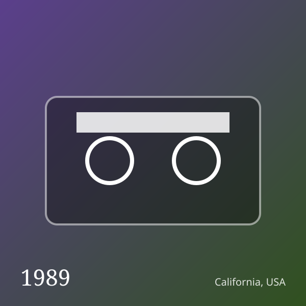

The teenage tape you hear on hold
Two teenagers' garage instrumental became the hold music millions of people wait through.

- who
- Tim Carleton & Darrick Deel
- what
- “Opus No. 1”, four-track recording
- when
- 1989
- where
- California, USA
In 1989 Tim Carleton and Darrick Deel, both about sixteen, recorded a smooth little instrumental on a four-track in a garage. It ended up as the default hold music on Cisco phone systems, and so it has been played to millions of people who never chose to hear it, while they waited.
A home-made tune became the world's most unwanted repeat listen. Carleton says he never handed over the ownership.